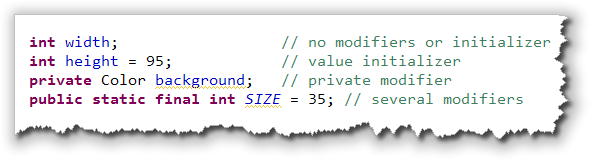
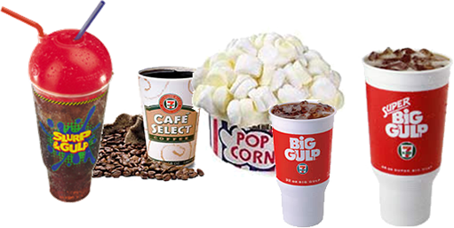
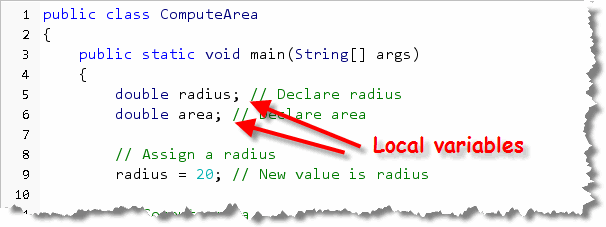
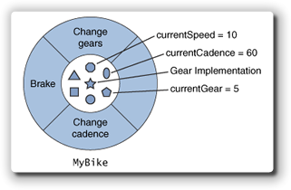
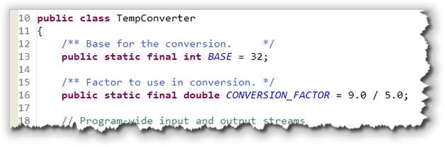

When you pass arguments (or parameters)
to a method, you supply information that the method
uses to carry out its, actions. In MyFirstConsoleProgram
from the chapter,
for instance:

the print() and println() methods use
the values that you supply—"Hello, I love you.",
"My name is Stephen Gilbert", and "I think I love you."—to
carry out the action of displaying your messages on the screen.
The values passed in this example are called literals,
because the values you use
appear literally in your source code.
Unfortunately, using literal values like this is good only for the simplest programs. Your name obviously isn't Stephen Gilbert, for instance. Wouldn't it be nice if, instead of using literal values, we could create custom values that could "adapt" to your environment as your program runs?
Well, that's what variables are. In this section you'll learn:
- how to create variables for simple (primitive) types
- how to assign a value to a variable
- how to create named constants you can use instead of literals
- how to create object variables and initialize them using a constructor.
We'll start by looking at the code you need to create variables.
Creating Variables
The formal definition of a variable is:
A named storage area that holds a value
To create a variable, you define it by using a special kind of Java statement called a declaration or definition statement. In Java, all variables must be defined before you can use them. (This is different than some other languages, such as Visual Basic, which permit implicit variable definition.)
The syntax (or rule) for defining variables looks like this:
The syntax elements appearing in gray (that is the modifier
and the = initial-value parts) are optional. The parts in
red (including the semicolon at the end) are required.
Here are some example definitions:

A definition or declaration tells the compiler what kind
of value the storage location should contain (int,
Color), the name of the storage
location, (width, height,
background, and SIZE), and,
optionally, an initial value to store in the location.
Initializing Variables
A variable is a named "chunk" of memory, but most of the time, we don't care about the chunk of memory at all—what we care about is what's inside the memory. The number stored inside a variable is called the variable's value. As your program runs, you can store different numbers inside the same piece of memory. (That's why we call it a variable, since its value can vary as the program runs.)
To put a new value in a variable, you use the
assignment statement like this:
 The assignment statement kind of looks like an
equation in algebra, but it works a bit differently.
The assignment statement copies the value on its
right, and stores the copy in the named memory
location (the variable) on its left.
The assignment statement kind of looks like an
equation in algebra, but it works a bit differently.
The assignment statement copies the value on its
right, and stores the copy in the named memory
location (the variable) on its left.
Technical Note : There are
two different uses of the assignment operator.
In the first line shown here, the assignment operator
should really be called the initialization
operator, because you are writing a definition or
declaration statement, not an executable assignment statement.
Executable assignment means giving a value to a variable that
already exists, not to provide an initial value to a newly
created variable. Executable assignment statements must
appear inside a method, while initialization statements
can occur outside a method when an instance variable is
defined.
How Assignment Works
 If you think of a variable as a mailbox, then
assignment is something like putting a letter inside
the mailbox. With memory, though, each "mailbox: is
just big enough to hold exactly one value. When you
put a second value into a variable, the one that's
there is replaced. (The computer science term for this
is a destructive copy.)
If you think of a variable as a mailbox, then
assignment is something like putting a letter inside
the mailbox. With memory, though, each "mailbox: is
just big enough to hold exactly one value. When you
put a second value into a variable, the one that's
there is replaced. (The computer science term for this
is a destructive copy.)
Here are some examples using two variables,
myAge and kathysAge.
(Kathy is my wife, so you'll understand that she isn't
too happy when I add a few years to her age.)
- The statement
myAge = 62;puts a copy of the value 62 into the variable namedmyAge. - The statement
kathysAge = myAgemakes a copy of the value 62 that is currently stored in the variablemyAge, and then stores that copy in the variablekathysAge. There is no transfer of the value stored inmyAge; the variablemyAgestill has its own copy of the number 62. - The statement
kathysAge = 60, replaces the value 62 that the variable previously held with the new value 60. The old value 61 is overwritten or replaced, not saved.
Notice that the variable kathysAge
varies as the program runs. At one point it
contains the number 62, and, later in the program's
execution, it contains the value 60.
Notice also that the variable myAge
contains the value 62 for the entire length of the
program. Assigning myAge to
kathysAge in line 2 doesn't change
myAge at all.
Data Types of Values and Variables
When we store values in a variable, we can classify
each value by the kind of thing that it is,
just like you can classify the beverages you can
purchase at 7-11. There, for instance, you can get
hot drinks, like coffee or hot chocolate, and cold
drinks, like soda and Slurpies.

The computer world works in a similar fashion. Instead of hot and cold, we can store text or numbers in a variable. We call the kind of value the value's data type. Here are some examples:
The values stored in PI and myAge
are both numbers, but they are
different kinds of numbers, just like coffee
and hot-chocolate are both hot drinks, but different
kinds of hot drinks. PI contains a
real number, with a fractional part, while
myAge holds a whole number with
no fractional part.
In contrast, the variable named myStreetNumber
does not contain a number. Instead, it contains
a sequence of three characters: the character "5"
followed by the character "7" followed again by the
character "5". In programming, we call such a sequence of
text characters, enclosed in double quotes, a
string literal.
The major difference between the numeric types
stored in the variables PI and
myAge, and the string types stored in the
variable myStreetNumber, is that you
can't use myStreetNumber as part of an
arithmetic formula or expression.
We'll look at Java's integer (whole number) types and
Java's real (floating-point) numbers later in this chapter.
We'll also look at one of Java's object types, the
String class, which we'll use to store
text data.
Variable Scope
You can define variables in two places: inside a method, or inside the class, but outside of any method. Variable that are defined inside a method are called local variables, and variables defined outside of a method, but inside the class, are called instance variables.
Local Variables
Local variables, (those defined inside of a method),
can only be used
inside the method where they were created.
Both of the variables area and radius
which are defined inside the ComputeArea program:

are examples of local variables, since they are defined inside themain() method.
Local variables are not given an initial value when they are created; you must provide an initial value explicitly, or assign a value before you use the variable. If you attempt to use an un-initialized local variable, the compiler will refuse to compile your code.
Local variables also don't use modifiers like static,
public, or private. You can, though,
use the modifier final to make a local variable
constant. We'll discuss doing that shortly.
In Short...
Local variables:
- are defined inside the body of a method.
- are not automatically initialized.
- do not use the modifiers
private. - may use the modifier
final.
Instance Variables
Until you start designing your own classes later in the semester, you'll use local variables to store most of your data. However, I want you to at least introduce you to instance variables so that you can recognize them. In Java, variables created outside of a method are officially called fields. However, in the real world, you'll more often see them called instance variables, which is a more general object-oriented term.

In the Bike class diagram on the right,
for instance, the instance variables
currentSpeed, currentCadence,
and currentGear can be used inside any of the
methods brake(), changeCadence(),
or changeGears().
Instance variables can be used inside any method in the class.
Normally, instance variables are created using the access
modifier private, so that the variable cannot
be used outside of the class. Occasionally, fields will
use the modifier protected, so that subclasses
created from the class may directly access the fields.
In very rare instances, programmers will use the
public modifier to allow unrestricted access
to an object's instance variables. This is almost always a
poor idea, as the designers of Java's Point,
Dimension, and Rectangle classes
discovered after-the-fact.
Unlike local variables, instance variables are automatically
given a value (initialized), even when you don't provide an
initial value. Numeric variables (like int) are
initialized to the value 0, while object variables are given
the special value null.
If you try to create an instance variable at this point,
you will discover that you can't use the variable
inside your main() method. That's one of the
drawbacks of putting code in the main() method.
So, for right now, we won't use instance variables.
Constants
Which of these two lines of code for calculating the total price
of a purchase are easier to understand?
 Obviously, in the second instance, you have no hint as to
what the number .875 actually means; it might be a
tax, a markup, a surcharge, or something else. You might use a
comment to let readers know that you're adding the sales
tax, and that would certainly help.
Obviously, in the second instance, you have no hint as to
what the number .875 actually means; it might be a
tax, a markup, a surcharge, or something else. You might use a
comment to let readers know that you're adding the sales
tax, and that would certainly help.

Because there is no meaning associated with such "raw" numbers,
a reader unfamiliar with your code can't easily tell what the
literal number .875 means. For
this reason, such literals are often called magic numbers.
A comment won't help you, though, when the tax rate
changes from 8¾% to 7¼% (we can always hope,
huh?) and you have to change all of your programs. When that
happens, you'll find yourself searching through your source
code looking for the number .875 and asking yourself, "Is
this the sales-tax-rate, or something else?". You're also
likely to change some, and miss a few others.
Of course, those of you who passed the fifth grade on the first try
will point out that 8¾% is actually .0875,
not .875. But, that's kind of the point! If you
use magic numbers in your code, then someone inspecting your program
doesn't know what the .875 means. If you create
a named constant, then a mistake like writing:
final double SALES_TAX_RATE = .875;
becomes much easier to catch.
Rather than using magic numbers, you should always use constants. A constant is just like a variable, (that is, it is a named storage area that holds a value), but Java prevents you from accidentally changing it by assigning it a different value.
Defining Constants
To define a constant, you use the keyword final
as a modifier before the type name, and provide a value
using the initializing assignment operator. (Since
constants can't be changed, you can't give it a
value later using the regular assignment operator.)
Although you can create local final
variables, that's actually not usually done.
Instead, the most common
way to define a constant is as a public static final
variable. This is like an instance variable, since it is
defined outside of any method, but, since it is final,
you don't need to make it private.
Here's a program named TempConverter using
class-wide constants:

To make it clear which names represent variables, (and thus can be changed), and which represent constants, the TempConverter program CAPITALIZES the names of the two constants. This is a convention that almost all Java programs follow, (and certainly one that we'll follow in this class.)Object Variables
Java really has two major ways of representing data: primitive
types like numbers and characters, and object types
like fonts, buttons, Strings and
Scanners. While you won't be creating your own
object types (or classes) until later in the semester, you
will need to know how to
create object variables, since you'll need to do that
this week.
You create an object variable, just like a primitive variable, by explicitly describing three things:
- What kind (type) of thing will be stored in the variable
- What name you want to use for the variable
- What initial value the variable should have
To store a value in your variable you use the assignment
operator, as you've seen. The assignment operator copies the
value on its right, and stores it in the object on its left.
To create a local variable of type Fraction (a
class type that I've defined), you would write something like
this:
As you can see, the variable's type is
Fraction, and the variable's name is
oneHalf, but how do we provide a value?
Constructing Objects
At this point, we're kind of in a quandary. How do we create an object? What do we put on the right-hand-side of the assignment operator? If our variable was one of Java's primitive numeric types we could use a literal value to do something like this:
int someNumber = 27;
Since oneHalf is an object or reference
type, however, we need to learn how to construct an
object; we can't just use a literal value like 27. Fortunately,
constructing an object is easy. To construct an
object—any object—you just use a constructor
method, along with the keyword new.
A constructor is simply a method that initializes objects.
A class represents a blueprint that describes
the attributes and methods of an object and the constructor is
the factory that creates the goods.
To make things even easier, constructors always have the same
name as the thing you're trying to create. Since we're trying
to create a Fraction object, we know that the
constructor is a method named Fraction(). Now we can
finish what we started:
Fraction oneHalf = new Fraction( . . . );
Constructor Parameters
Well, more or less finished. Notice that constructor parameter list is empty—there's nothing inside the parentheses. Most objects have several constructors, each one taking a different number or type of arguments. Parameters (or arguments) allow a constructor—or any other method—to customize its operation.
One version of the Fraction class takes two int
parameters, representing the numerator and denominator. Here
is code to create
three Fraction variables:
 and here's what those three variables, along with
the objects created by the constructors, look like
in memory.
and here's what those three variables, along with
the objects created by the constructors, look like
in memory.
The biggest difference between object and primitive
variables is that with primitives, the variable you create
contains a value. With objects, the variable
that you create only refers to the object. That's why
in my example here, the two variables b and
c both refer to (or share) the same
Fraction object.
Again, we'll cover this in greater depth later in the text. For the first half of the course, we'll concentrate on programming fundamentals, using mostly the primitive numeric types and some classes from the Java class libraries.

Variables and Values Summary
- Variables are named regions of memory that store a value. Before you can use a variable, it must be declared by specifying its name and the kind of value it will store.
- Java is a strongly typed programming language. Each variable and value contains a specific kind of data (text, number, object, etc.).
- To store a value inside a variable, use the assignment statement which copies the value on the right into the variable on the left.
- Local variables are declared inside a method, and
can only be used inside that method, while
instance variables are declared inside the class, but
outside of any method. Instance variables normally use the
modifier
private. - Constants are defined by using the modifier
finalwhen declaring the variable. Often constants are defined outside of a method, so that they can be used inside all methods in the class. When doing this, you use the additional modifiers,publicandstatic. - To initialize an object variable, you use the
newoperator and an object constructor. You may pass parameters to the constructor to customize the way that the object is created. - Object variables contain a reference value which allows access to the actual object located elsewhere. Multiple variables may refer to the same object, informally called sharing.